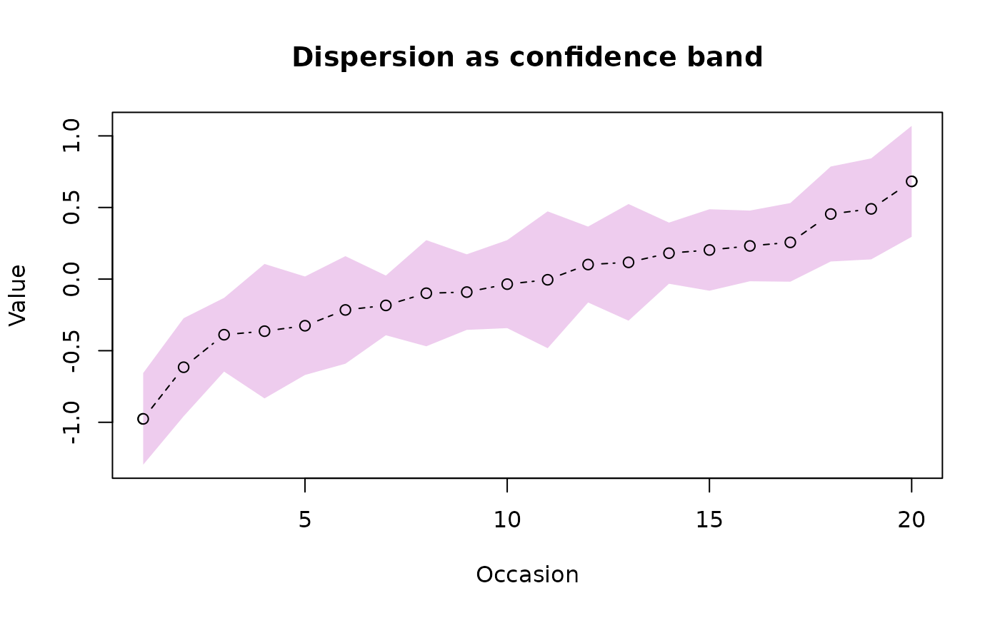

Display a measure of dispersion.
dispersion.RdDisplay lines or capped bars at specified points on a plot representing measures of dispersion.
Usage
dispersion(x,y,ulim,llim=ulim,intervals=TRUE,arrow.cap=0.01,arrow.gap=NA,
type="a",fill=NA,lty=NA,pch=NA,border=NA,col=par("fg"),display.na=TRUE,
...)Arguments
- x,y
x and y position of the centers of the bars
- ulim,llim
The extent of the dispersion measures.
- arrow.cap
The width of the cap at the outer end of each bar as a proportion of the width of the plot.
- arrow.gap
The gap to leave at the inner end of each bar. Defaults to two thirds of the height of a capital "O".
- intervals
Whether the limits are intervals (TRUE) or absolute values (FALSE).
- type
What type of display to use.
- fill
Color to fill between the lines if type is not NULL and fill is not NA.
- lty
Line type for redrawing the lines if necessary.
- pch
Symbol for redrawing the points if necessary.
- border
Line type for drawing a border on the confidence band.
- col
Color for the lines or capped bars.
- display.na
Whether to display NA values as lines going off the plot.
- ...
additional arguments passed to arrows or lines depending upon type.
Details
dispersion displays a measure of dispersion on an existing plot. Currently it will display either vertical lines with caps (error bars) or lines that form a "confidence band" around a line of central tendency. If fill is not NA and type is "l", a polygon will be drawn between the confidence lines. Remember that any points or lines within the confidence band will be obscured, so pass point and/or line types as in the second example.
The default behavior is to display an undefined dispersion (e.g. a variance with only one observation) as a line going off the plot. If display.na is FALSE, NA values will not be displayed, allowing the user to show only upper or lower dispersion limits.
The intervals argument allows the user to pass the limits as either intervals (the default) or absolute values.
If arrow.gap is greater than or equal to the upper or lower limit for a bar, segments is used to draw the upper and lower caps with no bars to avoid zero length arrows.
Examples
disptest<-matrix(rnorm(200),nrow=20)
disptest.means<-rowMeans(disptest)
row.order<-order(disptest.means)
se.disptest<-unlist(apply(disptest,1,std.error))
plot(disptest.means[row.order],main="Dispersion as error bars",
ylim=c(min(disptest.means-se.disptest),max(disptest.means+se.disptest)),
xlab="Occasion",ylab="Value")
dispersion(1:20,disptest.means[row.order],se.disptest[row.order])
plot(disptest.means[row.order],main="Dispersion as confidence band",
ylim=c(min(disptest.means-se.disptest),max(disptest.means+se.disptest)),
xlab="Occasion",ylab="Value")
dispersion(1:20,disptest.means[row.order],se.disptest[row.order],type="l",
fill="#eeccee",lty=2,pch=1)

disptest2<-matrix(sample(c(TRUE,FALSE),200,TRUE),nrow=10)
disptest.prop<-rowMeans(disptest2)
disptest.ulim<-disptest.llim<-rep(NA,10)
for(i in 1:10) {
disptest.ulim[i]<-binciWu(disptest2[i,],20)
disptest.llim[i]<-binciWl(disptest2[i,],20)
}
plot(disptest.prop,main="Dispersion as binomial confidence intervals",
ylim=c(min(disptest.llim),max(disptest.ulim)),
xlab="Sample",ylab="Proportion")
dispersion(1:10,disptest.prop,disptest.ulim,disptest.llim,
interval=FALSE,lty=2,pch=1)